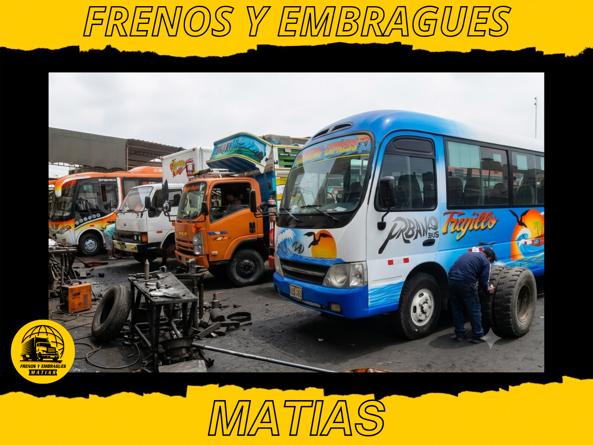

Los vehículos de reparto y flotas comerciales someten el sistema de frenos a un desgaste muy distinto al de un vehículo particular: paradas constantes, carga variable, y muchas veces varios conductores rotando en la misma unidad. Un plan de mantenimiento reactivo (esperar a que algo falle) casi siempre termina costando más — en reparaciones de emergencia, en unidades paradas, y en riesgo de seguridad para el conductor y la carga.
Por qué el desgaste es más rápido en flotas de reparto
- Paradas frecuentes: cada parada es un ciclo completo de frenado, y en una ruta de reparto urbano esto puede repetirse cientos de veces al día
- Carga variable: un vehículo cargado necesita más distancia y fuerza de frenado que uno vacío, lo que acelera el desgaste de pastillas y discos
- Múltiples conductores: distintos estilos de manejo (algunos más agresivos con el freno que otros) generan desgaste desigual entre unidades similares
- Kilometraje alto y constante: las flotas acumulan distancia mucho más rápido que un vehículo particular, adelantando los intervalos de mantenimiento en tiempo calendario
Plan de revisión recomendado
Estos intervalos son una referencia general — el kilometraje real depende del tipo de ruta y carga de cada flota:
- Cada 5,000 km o mensualmente: inspección visual rápida de pastillas (espesor), nivel de líquido de frenos, y revisión de ruidos reportados por los conductores
- Cada 15,000-20,000 km: revisión más completa: estado de discos, mordazas, mangueras, y purgado si el pedal muestra cualquier señal de estar menos firme
- Cada 40,000 km o 2 años (lo que ocurra primero): cambio de líquido de frenos, independientemente de si "se ve bien", porque absorbe humedad con el tiempo aunque no se use el sistema
- Según desgaste real: cambio de pastillas y/o discos cuando el espesor lo indique, sin esperar a que empiecen a chillar o rayar el disco
Involucrar a los conductores en el mantenimiento
Los conductores son quienes primero notan un cambio en el comportamiento del vehículo — un ruido nuevo, el pedal más bajo, vibración al frenar. Un canal simple para que reporten estas señales (aunque sea un mensaje de WhatsApp al encargado de flota) permite detectar problemas antes de que se conviertan en una falla en ruta. También vale la pena una charla breve sobre buenas prácticas: evitar frenar de golpe sin necesidad, no usar el freno para "sostener" el vehículo en pendientes largas, y avisar de inmediato ante cualquier cambio en la sensación del pedal.
Llevar registro por unidad
Cuando se maneja más de un vehículo, es fácil perder de vista cuándo se hizo el último cambio de pastillas en cada uno. Llevar un registro simple (aunque sea una hoja de cálculo) con fecha, kilometraje y qué se revisó por unidad ayuda a anticipar el siguiente mantenimiento en vez de reaccionar cuando ya hay una falla, y facilita detectar si una unidad específica está desgastando frenos más rápido de lo esperado — señal de que puede haber un problema mecánico adicional (una mordaza trabada, por ejemplo) o de que el conductor asignado necesita ajustar su estilo de manejo.
El costo de no hacerlo
Una unidad parada por una falla de frenos en plena ruta no solo cuesta la reparación de emergencia — cuesta la entrega no realizada, el tiempo del conductor varado, y en el peor de los casos, un accidente. El mantenimiento preventivo casi siempre resulta más barato que el correctivo cuando se suma todo el impacto real de una falla inesperada.
Armamos un plan de mantenimiento para tus unidades
Atención prioritaria, horarios coordinados y facturación empresarial para flotas.